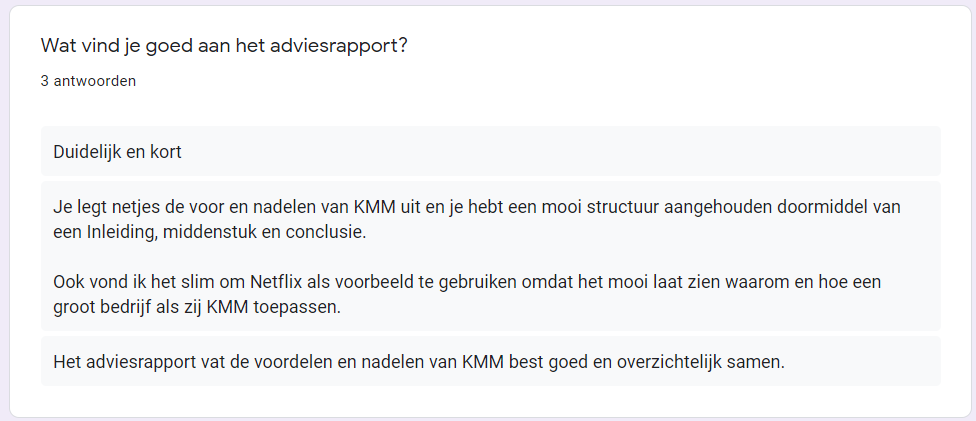
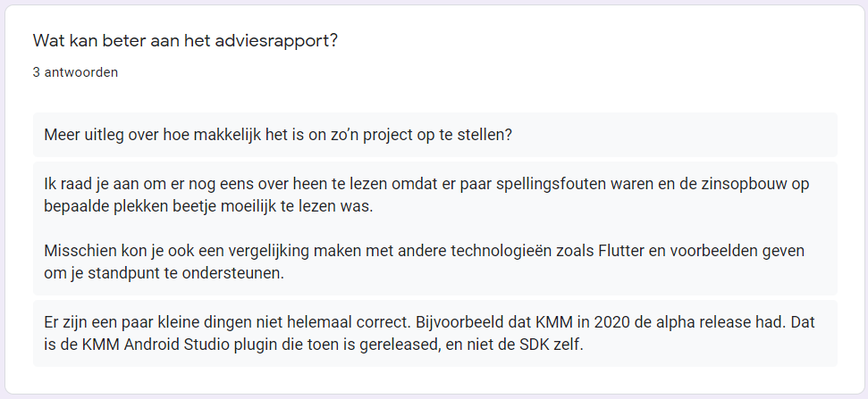
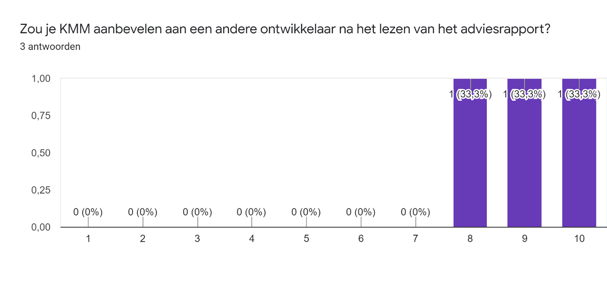

Adviseren
Leerdoel 1:
Ik wil na afloop van mijn stage een aanbeveling kunnen doen van het gebruiken van Kotlin Multiplatform voor het ontwikkelen van een applicatie voor Android, iOS of het Web.
Bewijslast
Als bewijslast zal ik aanleveren een adviesrapport (voor en na feedback) dat ik heb geschreven waarin ik de volgende structuur hanteer: inleiding, wat KMM is, Voor- en nadelen van KMM, Netflix en KMM, KMM en Flutter en een conclusie waar ik een aanbeveling doe voor het gebruik van KMM.
Adviesrapport voor feedback
Adviesrapport na feedback
Feedback
Om feedback van mijn collega`s te krijgen heb ik een Google formulier gemaakt waarin ik de volgende vragen stel: “Wat vind je goed aan het adviesrapport?”, “Wat kan beter aan het adviesrapport?“ en “Zou je KMM aanbevelen aan een andere ontwikkelaar na het lezen van het adviesrapport?”.



Zelfreflectie
Ik heb tijdens het schrijven geprobeerd om het adviesrapport niet te uitgebreid te maken. Het adviesrapport moet een hoge informatiedichtheid bevatten zonder al te veel tekst te gebruiken. Om dit te doen heb ik de voor- en nadelen beknopt beschreven van beide platformen. Zoals te zien in figuur 1 zijn mijn collega’s tevreden dat ik het kort en krachtig houdt. In figuur 2 is te zien welke feedback ik heb gekregen voor het adviesrapport, deze feedback heb ik ook verwerkt in mijn tweede adviesrapport. Ik heb de fout verbeterd waarin ik refereer naar de SDK, dit had de plug-in moeten zijn van KMM. Ook heb ik de zinsopbouw gewijzigd waar nodig en de spelfouten aangepast. Ik heb ook in mijn adviesrapport een kopje toegevoegd genaamd “KMM en Flutter” dit was een nuance die ik miste bij het opstellen van mijn adviesrapport. Ik heb KMM in het vorige adviesrapport niet vergeleken met een andere cross-platform tool, dit heb ik in mijn verbeterede adviesrapport nu wel gedaan. Bij het schrijven van dit adviesrapport heb ik zelf ook veel geleerd over de technologie waar ik gedurende mijn hele stage aan heb gewerkt. Zoals dat KMM eigenlijk een recente technologie is. Ook dat Android en iOS developers normaal gesproken niet samenwerken aan de zelfde codebase. Ik ben tijdens mijn stage hier volledig gewent aan geraakt, maar dit is niet de norm. Ik heb mijn collega`s tenslotte gevraagd of ze KMM zouden aanraden aan andere collega`s na het lezen van het adviesrapport. Ze vinden het allemaal een goede technologie en raden het aan, natuurlijk hebben zij ook een vooroordeel over de technologie omdat ze er dagelijks meewerken.